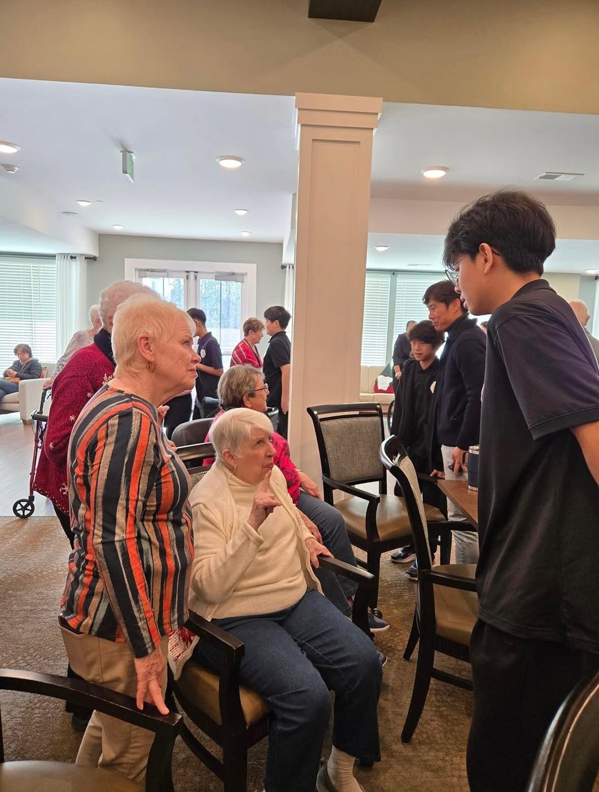
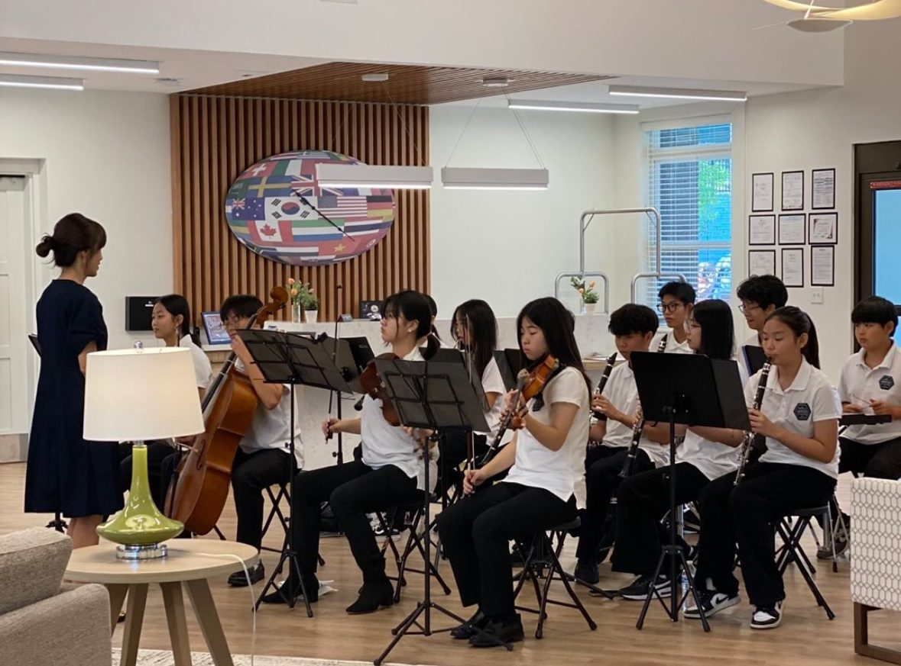
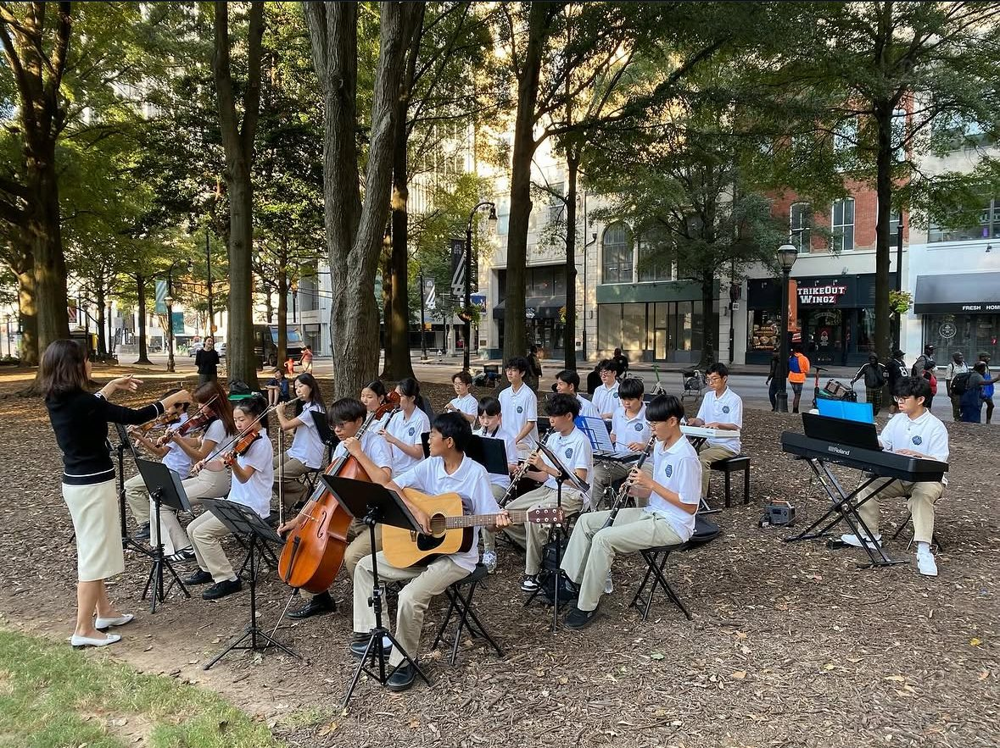
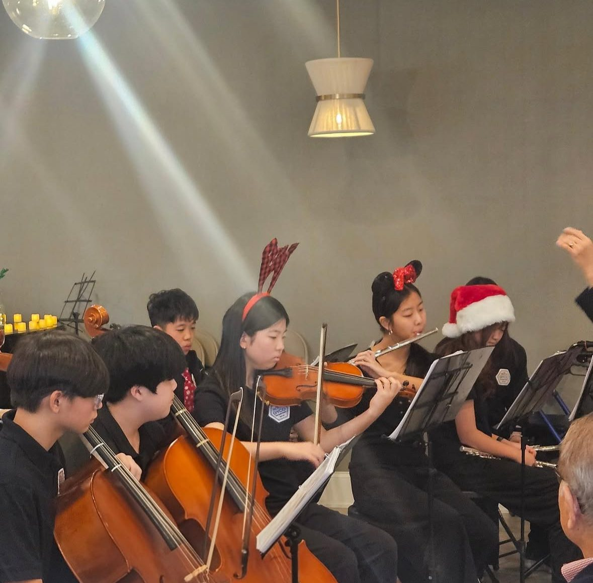
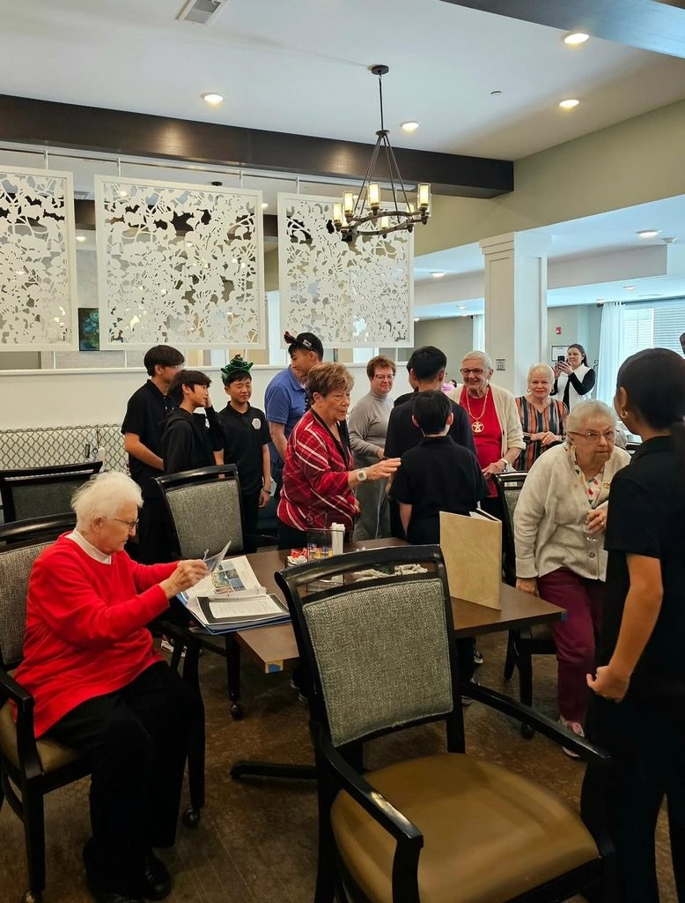
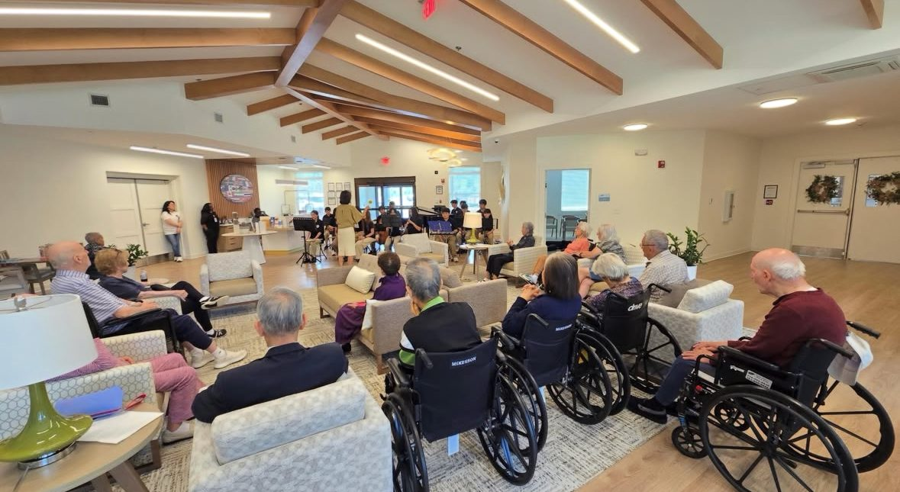
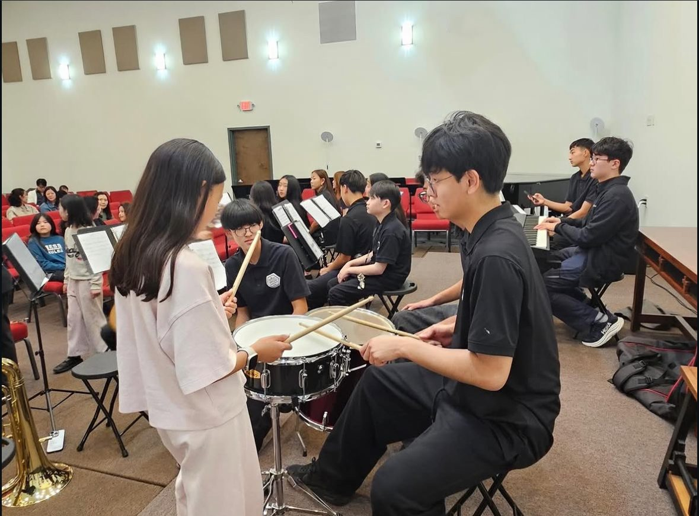
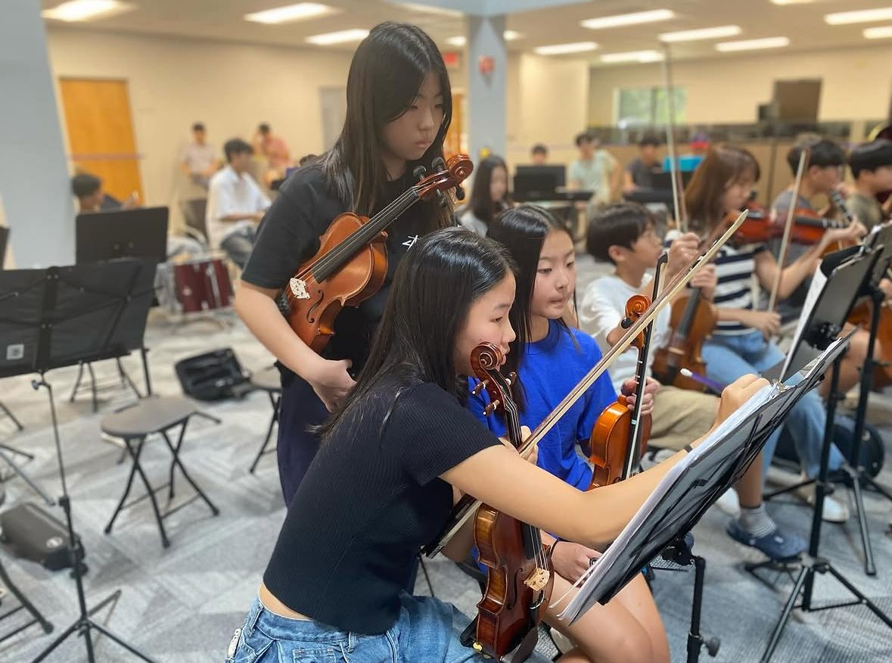
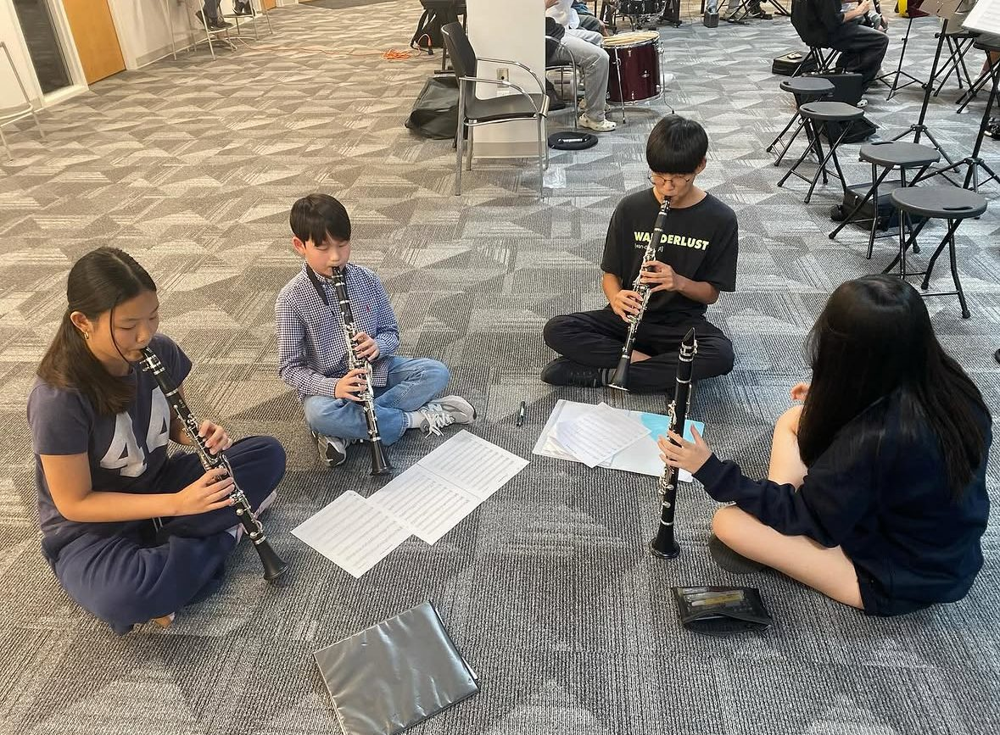

Stories, features, and public recognition of our work
Performances, teaching, community outreach — and the moments when the wider community took notice.
In the news
The English and Korean articles below are the same story, published in two languages for both communities.
On stage, in rehearsal



Where the music travels
Senior living visits, healthcare and family support programs, and partner community moments.



Students become teachers
Beat & Breeze sessions, Taps of Love teaching videos, and student-created learning resources.



Gallery content is added as the program grows. Follow along for the latest performances, teaching sessions, and stories from our students and partners.
The work is already reaching the community
GYCO shows the practice. NADO School explains the philosophy. Media shows the impact — proof that student learning is becoming real hope for real people.